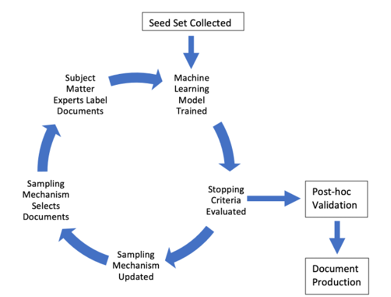

Recent technological advances are changing the litigation landscape, especially in the context of discovery. For nearly two decades, technologies have reinvented document searches in complex litigation, normalizing the use of machine learning algorithms under the umbrella of “Technology Assisted Review” (TAR). But the latest technological developments are placing discovery beyond the reach of attorney understanding and firmly in the realm of computer science and engineering. As lawyers struggle to keep up, a creeping sense of anxiety is spreading in the legal profession about a lack of transparency and the potential for discovery abuse. Judges, attorneys, bar associations, and scholars warn that lawyers need to closely supervise the technical aspects of TAR and avoid the dangers of sabotage, intentional hacking, or abuse. But none of these commentators have defined with precision what the risks entail, furnished a clear outline of potential dangers, or defined the appropriate boundaries of debate.
This Article provides the first systematic assessment of the potential for abuse in technology-assisted discovery. The Article offers three contributions. First, our most basic aim is to provide a technical but accessible assessment of vulnerabilities in the TAR process. To do so, we use the latest computer science research to identify and catalogue the different ways that TAR can go awry, either due to intentional abuse or mistakes. Second, with a better understanding of how discovery can be subverted, we then map potential remedies and reassess current debates in a more helpful light. The upshot is that abuse of technology-assisted discovery is possible but can be preventable if the right review processes are in place. Finally, we propose reforms to improve the system in the short and medium term, with an emphasis on improved metrics that can more fully measure the quality of TAR. By exploring the technical background of discovery abuse, the Article demystifies the engineering substrate of modern discovery. Undertaking this study shows that lawyers can safeguard technology-assisted discovery without surrendering professional jurisdiction to engineers.
Vulnerabilities in Discovery Tech
Call for contributions! We're always looking for more data. Feel free to send us a pull request!

A basic outline of a stylized TAR 2.0 system.
Abstract
Materials
Citation
Neel Guha*, Peter Henderson*, and Diego Zambrano*, Vulnerabilities in Discovery Tech, HARV. J. L. & TECH. (2022 Forthcoming)
Dataset of TAR Protocols
| Case | Description/Notes | Links |
| In re Broiler Chicken Antitrust Litigation | In this extensive TAR and ESI protocol, the special master required disclosure of the pre-processing methods, including any files, email domains, etc.
The protocol also required de-duplication, which would protect against some attacks we describe (some forms of dataset bias, hidden stratification, and data poisoning). The protocol requires disclosure of considerations specific to keyword searches, including disclosure of whether stop words were excluded, etc. These are important in TAR systems as well though the TAR system did not require similar disclosure. The protocol enforces a strict validation scheme which utilizes post-hoc sampling to validate the TAR method across 3,000 documents. |
Order Regarding Search Methodology For Electronically Stored Information |
| Prescott v. Reckitt Benckiser LLC | A status report on the use of TAR, describing conflicts between two parties on the use of CAL for a dataset of only 24,000 documents. There are also questions regarding whether keyword searches will be run before CAL. | Joint Status Report Re Technology Assisted Review |
| Elmgart, Oskar And Nicole J Elmgart v. Ocean Prime, Llc, Columbus Property Management, Inc., The Moinian Group, Centennial Elvator Industries, Inc. And Cba Consultants, Inc. | An ESI protocol that describes that files may be "de-NISTed" – a term meaning the culling of standard computer files related to non-responsive applications like the operating system. NIST keeps a list of such files called the National Software Reference Library (NSRL). The protocol requires that parties meet and confer before a TAR software is decided upon and transparency at a minimum requires: the TAR algorithm, the seed set size and contents, how the seed set was chosen, and control set size and F score. Seed set descriptive information may help protected against seed set bias. | Proposed ESI Protocol For Defendants’ Discovery |
| 850 Third Avenue Owner, LLC v. Discovery Communications, LLC | An ESI protocol similar to others above. | ESI Protocol Order |
| Yahoo! Inc. Private Information Disclosure Cases | A joint status conference statement with an agreed upon proposed ESI Protocol Order. The order does not require TAR use, but requires that parties meet and confer if TAR is used. The rest of the protocol is similar to others above. | Joint Status Conference Statement |
| Emerald Transformer Western States LLC v. Clean Harbors, Inc. and Clean Harbors Disposal Services, Inc. | A subpoena with similar ESI protocols as above and attached requests for production. | Subpoena Duces Tecum |
| Guerbet Ireland Unlimited Company And Liebel-Flarsheim Company LLC v. SPECGX LLC. | An ordered E-Discovery plan. This plan also allows for exemptions to redact information due to GDPR. If TAR is used the plan requires that parties discuss: “(i) whether any culling measures were taken prior to the application of TAR; (ii) the vendor being used to manage the application of the technology; (iii) the method(s) used to derive the seed or exemplar set; (iv) the method for validating the computer decisions; and (v) the measures taken to check the quality of the computer decisions.” | E-Discovery Plan |
| Mani Jacob and Lesleena Mars v. Duane Reade, Inc. and Duane Reade Holdings, Inc. | Equivio Zoom to be used to randomly select documents for seed set. Requires reporting of richness level in seed set and “Assessment Sets”, with richness levels at different relevance ranking clusters. Then a round of quality control will be done on all documents marked unresponsive with 95% confidence and 2% margin of error. | Stipulation and Scheduling Order Regarding Technology Assisted Review |
| Rio Tinto PLC v. Vale S.A., et al. | A TAR protocol with an attached opinion from Judge. Interestingly both parties were subject to discovery here, creating symmetric incentives. Peck. Rio Tinto used Relativity Assisted Review. Vale used Deloitte's Dynamic Review. The protocol covers a large number of aspects including: allowed composition of the seed set, validation metrics, the stopping criteria, and more. Interestingly, this protocol requires disclosure of non-responsive documents in the seed set. | Opinion & Order Titled Predictive Coding a.k.a. Computer Assisted Review a.k.a. Technology Assisted Review (TAR) - Da Silva Moore Revisited |
| Judith Cole, Louise Michael, and David Johnson v. Keystone RV Company | An ESI order similar to those above except that it provides an established definition of an “overly broad” search term: “Focused terms and queries should be employed; broad terms or queries, such as product and company names, generally should be avoided. Absent a showing of good cause, each search term or query returning more than 250 megabytes of data is presumed to be overbroad, excluding Microsoft PowerPoint files, color images, audio/video files, and similarly large file types.” | Stipulation Regarding Discovery of Electronically Stored Information and Order |
| In Re: 3M Combat Arms Earplug Product Liability Litigation | Uses Xact Data Discovery’s licensed TAR tool Relativity Active Learning (version 9.5.370.136). Sample set of 1750 documents for validation. After reviewing this sample set for an elusion score and determine if stopping point is appropriate. Anything with a classification score above 56/100 must be reviewed. Note that a supplemental model and protocol was added, so there were additional negotiation and process after the first round. | Pretrial Order No. 12 Protocol Relating To Use Of Technology Assisted Review (“Tar Protocol”) Pretrial Order No. 44 Supplemental Protocol Relating To Use Of Technology Assisted Review (“Supplemental Tar Protocol”) |
| Joshua Sitzer And Amy Winger, Scott And Rhonda Burnett, and Ryan Hendrickson v. The National Association Of Realtors, Realogy Holdings Corp., Homeservices Of America, Inc., BHH Affiliates, LLC, HSF Affiliates, LLC, The Long & Foster Companies, Inc., Re/Max LLC, and Keller Williams Realty, Inc. | A protocol that requires de-NISTing, de-duplication, and other culling procedures. Then TAR disclosures require: "(a) the name of the TAR software and vendor, (b) a general description of how the producing Party's TAR process will work, including how it will train the algorithm, such as using exemplars, keyword search strings, or some other method, (c) a general description of the categories or sources of the documents included or excluded from the TAR process, and (d) what quality control measures will be taken." And the validation protocol largely mirrors In Re Broiler Chicken's protocol. | Order Regarding Stipulated Technology Assisted Review Protocol |
| Livingston v. City of Chicago | An interesting debate over which TAR protocol to use and the Judge's ruling. Ultimately, the judge does not impose the more restrictive prosposed protocol by Plaintiffs, giving discretion to the producing party. The dispute centers around the specifics of the TAR protocol, including the validation mechanism and whether TAR is layered on search terms or not. | Plaintiffs’ Motion For Compliance With The Court-Ordered Esi Protocol Or, In The Alternative, For Entry Of A Protocol For Technology Assisted Review
[Proposed] Protocol Relating To The Use Of A Continuous Active Learning Tool (“Cal Protocol”) Memorandum Opinion And Order |
| In re Peanut Farmers Antitrust Litigation | A similar protocol to In re Broiler Chicken, but it explicitly specifies that "a recall estimate on the order of 70% to 80% is consistent with, but not the sole indicator of, an adequate (i.e., high-quality) review." | Validation Protocol Order |
| Epic v. Apple | Both the joint letter regarding negotiations over the TAR validation protocol and the order on the validation protocol. Interstingly, Epic argues that Apple's process manipulates the validation metric. "Of the approximately 3.8 million documents that Apple has produced, 2.2 million are versions of a single automatically generated email sent from the “iTunes Content Manager”, a service that appears to send brief notices when there are changes to iTunes content. These emails, even if technically responsive to Plaintiffs’ document requests, are of no discernible value to litigating the claims in this case. However, including them in Apple’s validation process will render it meaningless, making it inevitable for Apple to satisfy the validation requirements overall even if its TAR process performs poorly finding every other kind of document in this case. For example, under a reasonable set of assumptions, Apple could exceed overall recall of 75% even while achieving recall of just 57% across the population of responsive documents other than the 2.2 million iTunes Content Manager emails. The validation protocol should include mutual provisions that exclude such bulk emails from any validation performed by Apple or Epic." To counteract this, the final order does not allow any document comprising more than 2% of the dataset to be included. | Joint Letter Brief Regarding Validation Protocol
Joint Stipulation And Order Re: Validation Protocol |
| In Re: Valsartan, Losartan, And Irbesartan Products Liability Litigation | Uses Brainspace Continuous Multimodal Learning (“CMML”) (version 6.2.8). Excludes images and documents of too poor OCR quality (though it is not clear how this is specified). Includes specific stopping criteria, including that 15% of entire document set has been reviewed and that elusion sample has 95% confidence level and 5% error with 80% recall or more. Then a validation sample of 5000 documents from 6+ different strata. Each strata consists of very specific criteria such as those not reviewed by human reviewers and selected using a search query. | Protocol Regarding Validation Of Technology- Assisted Review (“Tar”) |
| Port of Vancouver USA v. HDR Engineering, Inc. and Smith-Monroe Gray Engineers, Inc. | ESI protocols similar to above. | Agreement Regarding Discovery Of Electronically Stored Information And [Proposed] Order |
| In Re Diisocyanates Antitrust Litigation | Describing a despute over conflicting protocols and rejecting plaintiffs proposed methodology. | Special Master's Report and Recommendation |
| Da Silva Moore v. Publicis Groupe & MSL Group | Order describing dispute over TAR protocol, including construction of seed set after new RFPs were added. | Order and Opinion and ESI order |
| Bessemer System Federal Credit Union v. Fiserv Solutions, LLC | ESI protocol similar to the above, specifying deduplication, production format, etc. Specifies that parties need to meet and confer and provide written protocols if TAR is used. | Stipulated Order on Production of Documents and Electronically Stored Information |
| DOJ Antitrust Division Sample Predictive Coding Agreement | DOJ's predictive coding agreement does not allow TAR to be used on non-text documents. No analytics can reduce the TAR dataset (i.e. no culling). Foreign language documents must use an alternate workflow with distinct seed sets and training rounds. | Department of Justice, the Antitrust Division, Predictive Coding Model Agreement |
| In Re: Actos (Pioglitazone) Products Liability Litigation | ESI Protocol including use of Epiq Systems predictive coding. | Case Management Order: Protocol Relating to the Production of Electronically Stored Information ("ESI") |
| St. Gregory Cathedral School, ADK Quarter Moon, LLC, Lexmi Hospitality, LLC, and Shri Balaji, LLC v. LG Electronics | An ESI and TAR protocol for use of text categorization software provided by Deloitte Financial Advisory Services LLP. A recall of at least 75% after validation was required. | Joint Protocol And Order Relating To The Use Of Predictive Coding For Production Of Electronically Stored Information |
| Matthew Edwards, Georgia Browne, and Torah Montessori School v. National Milk Producers Federation | A TAR protocol describing construction of seed and control sets. | Joint Stipulation And Order Re The Use Of Predictive Coding Technology |
| Wilmer Garcia Ramirez, et al., V. U.S. Immigration And Customs Enforcement, et al., | A proposed TAR protocol by plaintiffs and continued dispute over how U.S. ICE used TAR. |
Memorandum Regarding Plaintiffs’ Proposed Plan For Production Of Electronically Stored Information Protocol For Use Of Active Learning To Assist With Responsiveness Review Draft Plan For Review Of Electronically Stored Information Defendants’ Proposal Concerning Production Of Electronically Stored Information And Response To Plaintiffs’ Proposal Defendants’ Notice Demonstrating Compliance With The October 12, 2018 Minute Order Declaration in Support of Defendants’ Notice Demonstrating Compliance With The October 12, 2018 Minute Order Parties’ Joint Status Report Discussing Tar Dispute Series of Minute Orders Requiring Clarification on TAR Protocol |